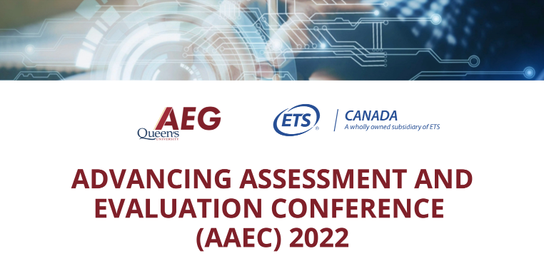
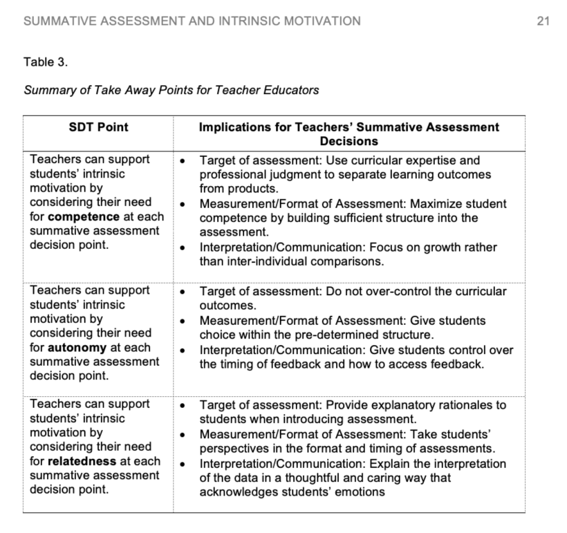

Theme 1 Critical Contexts
1.1 Theme Overview

Description: The COVID-19 pandemic caught education off guard. This panel was designed to begin the conversation about how we can advance assessment and evaluation to better understand learning in critical contexts and possibly offer strategies to facilitate learning and mitigate educational gaps to be better prepared for the next critical context.
The following questions were intended to inspire and generate ideas. The speakers did not need to address the questions directly.
How has the pandemic affected learning and disparities in learning opportunities and outcomes?
How can assessment and evaluation help us measure and address disparities, opportunities and outcomes in learning that took place during the pandemic so that we can be better prepared for the next unexpected critical context?
How can assessment and evaluation address mental health struggles that will far outlast the pandemic and help all those affected move forward?
1.2 Radical Change
Author: Christopher DeLuca, PhD
Institution: Queen’s University
Recommended Citation:
DeLuca, C. (2022, January 27-28). Radical Change [Paper presentation]. Advancing Assessment and Evaluation Virtual Conference: Queen’s University Assessment and Evaluation Group (AEG) and Educational Testing Services (ETS), Kingston, Ontario, Canada.
A year ago, I was asked to write an assessment provocation in relation to what, at that time, seemed like a nightmarishly long pandemic. Now, two years in, I continue to consider the effects of COVID on students, teachers, and society, now and inevitably for years to come. My previous provocation called for radical change, by drawing on the reflection that “much educational assessment research [and indeed curriculum writ large] fell painfully short of addressing the pressing challenges before us; that much of our research reinforced the status quo, feeding past architectures of education and perpetuating systemic structures of reward, exclusion, and inequity” (DeLuca, 2021, p. 167). Global calls for radical change permeate all sectors in response to COVID-19 but also in response to other mass crises – the climate emergency, our racial reckoning, the necessity for Indigenous resurgence and remembering, and the mental health and opioid crisis which has only been exacerbated in COVID times, among others. However, these calls are particularly critical for education where radical truth has the power to transform teaching and learning into radical hope and a radical re-imagining for a better future (McGregor, Pind, & Karn, 2020).
What have we learned from COVID – two years in – about curriculum and assessment? First, it is clear that curriculum and assessments predicated solely on discrete content knowledge are wholly inadequate in preparing us for the challenges we now face and will face in the future. While knowledge from across all the disciplines has been undeniably essential in responding to COVID, it has been the intersection of these knowledges that has mobilized our responses. Science alone is of little value without literacy to communicate and educate; mathematical modelling is illuminating but only when considered in relation to population psychology, politics, business, and economics. Historical analyses of previous pandemics are more beneficial when set within narratives, considered in relation to current population statistics and sciences, and reframed to today’s social norms and desires. Perhaps more important, have been other skills and capacities beyond disciplinary knowledges, in combatting this crisis. What COVID and other global challenges have taught us is the importance of human wellness relationships and need to “teach our children how to care for themselves, each other, and our world” (DeLuca, 2021, p. 168). The emphasis here is on a curriculum of care, drawing largely from Nodding’s work. She argues, “against an education system that puts too much emphasis on academic achievement defined in terms of test scores and the acquisition of information” and instead believes students should “be given opportunities to learn how to care for themselves, for other human beings, for the natural and human-made worlds, and for the world of ideas” (Noddings, 2005, p. 2).
At the heart of this argument is a radical change away from priorities of testing siloed knowledges towards a curriculum that engage students in learning to care, which demands learning about subjects, the self, community, and skills. It is a curriculum of social action with calls for authentic and deeply integrated assessments. Importantly, this orientation draws on an integrated curricular model, one purported by the OECD (2018, p. 4), and which helps learners “examine local, global and intercultural issues, understand and appreciate different perspectives and world views, interact successfully and respectfully with others, and take responsible action toward sustainability and collective well-being.” And it both aligns with and extends discourse surrounding 21st century learning competencies – collaboration, creativity, supporting equity, communication, self-regulated learning, metacognition, digital literacy, and problem solving (Pellegrino, 2017) – by placing learners in direct responsibility for personal and social change through their learning.
Calls for a more caring-centred curriculum are not new, and there is ample evidence that such a model of education is possible and works. Research from Suparna Roy – an Assessment and Evaluation Group alumni – has shown the possibility and value of an integrated, community service-oriented curriculum in her study of a sixth-grade class (Roy, 2019). Through her year-long project with students and teachers, she worked to implement curriculum that purposeful prioritised learning-to-serve through an inquiry pedagogy that integrated disciplinary learning with student collaboration and community engagement. Data from her study show that such a model cultivated selflessness in students, helped regulate students’ emotions, encouraged prosocial behaviours, and built and deepened relationships in the classroom and within community. Similarly, in our recent work with teachers committed to integrated teaching models in Ontario elementary and secondary levels (Dubek, DeLuca, & Rickey, 2021), specifically drawing on a STEAM approach, we found that they universally endorsed this approach and recognized it for teaching foundational 21st century learning skills while also addressing content knowledge expectations. Yet most importantly, these teachers noted that an integrated curricular orientation provoked learning grounded in critical social contexts, allowing them to apply their learning to real social and community concerns –– an integrated curriculum of care.
A necessary imperative across this research (Dubek et al., 2021; Roy, 2019) was the need to reframe assessment to meaningfully support learning within an integrated model. This reframing has involved four key features. Firstly, traditional summative assessments focussed primarily on siloed content learning no longer occurred at the end of learning cycles, but rather were repositioned as smaller check points throughout students’ learning journeys to ensure they had the requisite knowledge to effect change in relation to their critical context, because knowledge is the precursor to action. Second, summative assessments were still deemed essential but redesigned as fully integrated and authentic opportunities to culminate learning in actions and applications, often through collaborative experiences that assessed and prioritised a range of student learning skills and capacities. Third, formative assessment, including assessment for and as learning, became a dominant driver for learning a both individual and group levels. Specifically, multiple feedback mechanisms (i.e., self-documentation, goal setting, reflection, self-testing, protype testing, making metacognitive processes explicit, interactional self-assessment, peer assessment, and dialogue) were infused throughout the learning process to stimulate learning. Lastly, assessment was not limited to the classroom; community members and parents were brought into assessment dialogues in active ways to support student learning but also as a means to cultivate deeper relationships.
In closing, I return to the challenge before us: the painful shortfall of much educational assessment research and practice to support, promote, and report on a curriculum of care. For radical change in education, we must be willing to critically dismantle the assessments of the past, and establish assessment processes that attend to the collaborative, relational, and complex learning that is at the heart of learning to care. Dominant priorities of accountability and broad conceptions of assessment manifest through comparisons, standardization, and testing need to be reconsidered and replaced with authentic, person-centred, and locally valid assessments. Accountability should be measured in the actions of our students not in their test scores.
References
DeLuca, C. (2021). Towards more radical assessment systems. In Wyatt-Smith, Adie, Nuttall (Eds.), Teacher Performance Assessments as a Cultural Disruptor in Initial Teacher Education: Standards, Evidence and Collaboration (pp. 167-170). Singapore: Springer.
Dubek, M. DeLuca, C., & Rickey, N. (2021). Unlocking the potential of STEAM education: How exemplary teachers navigate assessment challenges. The Journal of Educational Research, 114(6), 513-525.
McGregor, H. E., Pind, J., & Karn, S. (2020). A “Wicked problem”: Rethinking history education in the Anthropocene. Faculty of Education, Queen’s University.
Noddings, N. (2005). The challenge to care in schools: An alternative approach to education (2nd ed), New York, NY: Teachers College Press.
OECD. (2018). Preparing our youth for an inclusive and sustainable world: The OECD PISA global competence framework. https://www.oecd.org/pisa/Handbook-PISA-2018-Global-Competence.pdf
Pellegrino, J. W. (2017). Teaching, learning and assessing 21st century skills. In S. Guerriero (Ed.), Pedagogical knowledge and the changing nature of the teaching profession, Educational Research and Innovation (pp. 223–251). OECD Publishing.
Roy, S. (2019). A pedagogy of selflessness: A multiple case study exploring the cultivation and expression of student selflessness in an Ontario Grade 6 classroom. Unpublished doctoral dissertation. Kingston, ON: Queen’s University.
1.3 Reimaging Educational Assessment in the New Normal
Author: Kim Koh, PhD
Institution: Werklund School of Education, University of Calgary
Recommended Citation:
Koh, K. (2022, January 27-28). Reimaging Educational Assessment in the New Normal [Paper presentation]. Advancing Assessment and Evaluation Virtual Conference: Queen’s University Assessment and Evaluation Group (AEG) and Educational Testing Services (ETS), Kingston, Ontario, Canada.
Introduction
The unprecedented COVID-19 pandemic is a global crisis, which has led to many disruptions to education. In addition to the coronavirus, the world has increasingly faced various threats due to racial injustice and violence, different ideologies in politics and vaccine, economic recession, cyber-terrorism, and climate change. Digital divide is one of the many social inequalities. At the beginning of the pandemic, more than 1.2 billion students in the world were forced to learn remotely using technology, while their teachers had to adapt to teaching and assessing remotely (UNESCO, 2020). However, not every student has access to the latest digital tools and the fastest Internet connectivity. This unplanned and rapid move to digital learning environments has widened inequalities between students from low- and high-socioeconomic status backgrounds. For instance, according to OECD’s Program for International Student Assessment data (Schleicher, 2020), 95 per cent of students in economically, developed countries (e.g., Switzerland, Norway, Austria) have a computer to use for their schoolwork, whereas only 34 per cent of students in developing countries (e.g., Indonesia) have access to a computer at home. Such a digital divide has perpetuated or even exacerbated existing disparities in educational opportunities and outcomes.
A lack of technological resources and support can disrupt students’ online instruction and assessment. This constitutes an issue of equity and social justice. Even after the distribution of free computers and tablets to many students later on in the pandemic, there is growing evidence that online teaching, learning, and assessment can pose challenges to students and their teachers. For example, teachers often lack time to design and modify instructional activities and assessment tasks for online instruction or must constantly shift their teaching and assessment modality from in-person to online, potentially causing disruptions to students’ learning. Many students lack motivation to attend online classes or may even become disengaged from learning and completing assignments. Some even decide to drop out of school during the pandemic. Even when supplied with a free technology device, students from disadvantaged family backgrounds or from marginalized communities may feel that they are not sufficiently equipped to use the technology effectively. If their academic performance is assessed through a digital assessment, the data may be distorted, thereby resulting in an inaccurate evaluation of what they know and can do (National Academy of Education, 2021).
Two years into the pandemic, many students are now at risk for suffering from learning loss. Some students and parents have also faced worsening mental health due to prolonged lockdown measures and greater financial burdens (Oster et al., 2021). Although schools have reopened for students, strict physical distancing, restrictions with sharing learning materials and equipment, and minimal social interactions have made group work and other activities very difficult in and out of the classroom. For example, in STEM (science, technology, engineering, and mathematics) learning, many informal learning opportunities such as visiting museums, summer camps, field trips, and after-class activities, are no longer possible. In the report Raising Canada 2020 (Children First Canada, O’Brien Institute for Public Health, & Alberta Children’s Hospital Research Institute, 2021), Canadian students were found to be in danger of increasing levels of anxiety and depression due to the negative consequences of the COVID-19 pandemic. These consequences include poverty and food insecurity, child abuse and neglect, social isolation, and physical inactivity. Research has shown that students’ mental health problems could compromise the quality of their learning, ultimately leading to lower academic performance.
At this juncture, the many waves of new variants, including the highly transmissible Omicron variant, have led to school closures, and many students have had to resort to emergency remote learning again. Alibudbud (2021) has pointed out that prolonged online learning can result in negative mental health consequences, including increased anxiety and absenteeism among students. In an online learning environment, some students may be neither tech savvy nor willing to speak and turn on their video cameras. This may make it more difficult for teachers to assess student engagement and motivation to learn, as well as other learning outcomes. However, some studies (e.g., Cavanaugh & Jacquemin, 2015) in higher education have found no significance difference in student learning outcomes when comparing the online and face-to-face modalities. Taken together, these suggest that disparities in learning opportunities and outcomes in K‒12 schools and postsecondary institutions in the current critical context may widen compared to their condition before the pandemic. Future research needs to focus on understanding disparities in educational opportunities and outcomes (i.e., cognitive, affective, and physical) in online and blended learning environments.
Alternative Assessments to Address Disparities, Opportunities, and Outcomes in Learning
It is time for educational researchers and educators to reflect on, redefine, and identify these constructs in the new normal. For example, what are the new learning disparities in a digital age? Are there equitable educational opportunities for those who are marginalized (e.g., newcomers, English language learners, low-income families, racialized communities, children with special needs)? What are the essential educational and psychological outcomes (i.e., literacy and numeracy, competencies or soft skills, social and emotional well-being) that matter to students, teachers, and parents within the current critical context and beyond?
The functionalities of some of the new assessment methods (e.g., big data, learning analytics, and serious games) are worth investigating. Even before the pandemic, effective use of big data could help inform policymakers’ decisions on reallocating resources to aid schools and marginalized communities (e.g., new immigrants, refugees, Indigenous Canadians). Likewise, learning analytics enable teachers to make instructional and assessment decisions based on real-time data. Through such data, a teacher can assess, monitor, and respond instantly to a student’s understanding of the learning material as well as a student’s social emotional skills and other competencies. Such a formative assessment or assessment for learning strategy not only helps a teacher to provide timely, quality feedback to improve student learning and performance, but also enables the teacher to adjust teaching or to differentiate instruction. Using such strategies allows teachers to create more equitable learning opportunities to meet the need of every student. Research in higher education has advocated for the leveraging of big data and learning analytics in the assessment of student learning in an online environment. For instance, according to Martin and Ndoye (2016), learning analytics enables instructors to download, analyze, and interpret student data immediately so that students who are at risk for learning and social or emotional problems can be identified as early as possible in a course and intervention strategies can be developed to remedy such problems.
Many educators may wonder what essential students’ learning outcomes need to be assessed and monitored within the current critical context. The existing formal and informal assessment methods can be reviewed to determine whether they still provide reliable and valid data that help inform teachers’ instructional practices and students’ learning in online, face-to-face, and blended learning environments. A heavy focus on administering large-scale assessments during the pandemic and using the resulting data to make important decisions about students and schools (e.g., placement, admission, ranking of schools, allocation of resources to schools) may result in bias and injustice due to the lack of equitable learning opportunities, resources, and social emotional support for students. Due to the unpredictability of the pandemic, high-stakes examinations have often been cancelled at the last minute. Even if students are able to sit for these exams, their stress and anxiety levels may increase given the new social and physical restrictions, face masking, and plexiglass barriers. Instead of mid-year and end-of-year summative assessments, formative assessments (e.g., clearly defined success criteria and performance standards in a rubric, timely and high-quality feedback, and self-assessment) could be incorporated into teachers’ instructional plans to help students to become more engaged in the learning process and more responsible for monitoring their own progress toward the learning goals that they themselves and their teachers have established. Further, classroom assessment may focus more on monitoring individual students’ learning progression and making learning visible for students (Hattie, 2012). This will support students’ development of a growth mindset (Dweck, 2006). There is an urgent need to focus on the design and development of curriculum sensitive and culturally responsive assessment tools and strategies, which measure students’ growth in learning over time and which serve diagnostic purposes.
During this critical time, authentic and formative assessments need to be promoted in day-to-day teaching and learning contexts so that students are given more opportunities to develop and demonstrate a variety of competencies (e.g., critical thinking, complex problem-solving, creativity and innovation, self-regulated learning, self-efficacy, grit and resilience, perseverance, risk-taking, and entrepreneur mindset). These competencies can help prepare them for life and studies after the pandemic, as well as their future careers. Authentic assessment replicates real-world problems and performance standards typically faced by professionals in the field (Koh, 2017; Wiggins, 1989). Students can be encouraged to complete their tasks under the guidance and mentorship of their teachers or of educational assistants who can provide timely and quality feedback using well-developed rubrics. Authentic assessment also creates opportunities for students to produce innovative and creative products or performances, thereby preventing them from cheating and committing plagiarism. Other forms of formative assessment, such as self-assessment, can be seamlessly incorporated into authentic assessments so that students can be encouraged to monitor their own progress and take more responsibility for their own learning. In the long run, this can help develop their self-directed learning skills, confidence, and academic self-efficacy.
Enhancing Teachers’ Assessment Capacity in the New Normal
In a world plagued by the uncertainty of new variants, intense racial tensions, and other social injustice issues, K-12 teachers’ capacity to design, modify, select, and use assessment methods or tasks that are culturally responsive to the learning needs of individual students has become increasingly important. It may be necessary to create more opportunities for teachers, researchers, assessment specialist, instructional designers, and IT professionals to dialogue and collaborate in the design of effective classroom assessments and learning environments. Additionally, it is important to consider how advances in technology (e.g., virtual reality, augmented reality, machine learning, and artificial intelligence) can be leveraged to design alternative forms of assessments, such as authentic assessments and online formative assessments (e.g., automated feedback system), especially if teaching and learning have to constantly shift from in-person to online or must take place in a blended environment. Furthermore, how to accommodate assessment modes for students with special needs must also be taken into account.
In addition to the design of assessment and leveraging technology, teacher capacity building is equally important. Hence, teachers need to be supported through the provision of high-quality professional learning and development opportunities. Teachers’ competencies in providing feedback and in both designing and using rubrics and exemplars are essential for effective assessment for learning or formative assessment practice, to be carried out in face-to-face, online, and blended learning environments (Koh et al., 2021). The provision of timely and descriptive feedback can also reduce students’ level of stress and anxiety about their academic performance. It is also necessary to focus more on assessing students’ growth in each subject area. Thus, report cards could adopt a narrative format, highlighting students’ strengths and areas for improvement and orienting them toward a growth mindset (Dweck, 2006). Similar to the teachers in Australia, Scotland, and Finland, teachers in other parts of the world including Canada, need to be given more agency and autonomy in the assessment and evaluation of students’ work. School leaders and parents should put their trust in teachers’ professional judgement. Online moderation panels may be set up for teachers to moderate students’ work. Moderation conversations serve as a powerful mechanism for teachers’ professional learning and growth in assessment literacy (Klenowski & Wyatt-Smith, 2014). Such a mechanism is now more important than ever so that teachers will not feel that they are fighting the pandemic in silos.
Finally, teachers need to be aware of digital divide, which may impact the technology that their students have and their ability to access and engage with learning materials, readings, and assessment tasks. Some students may not be able to complete assignments on time. Online learning environments need to be safe, caring, and supportive for every student. The use of technology in teaching, learning, and assessment has increasingly become the norm during the COVID-19 pandemic. Therefore, it is important for teachers to know how to create online environments that are accessible and flexible, and that provide students with options for participation, taking into account the challenges and constraints students may encounter (Correia, 2020). Online forum or discussions should be evaluated based on the quality of discussion (i.e., thoughtful questions and answers or reflections), not on the number of posts and replies. More intentional scaffolding of online learning activities and assessment tasks is necessary. Providing students with effective rubrics and educative exemplars can give them a sense of agency in assessing and monitoring their own learning in face-to-face, online, and blended learning environments (Koh et al., 2021).
Designing Assessment for Learning: Care, Hope, Collaboration, and Growth Instead of obsessing with summative assessments for accountability and grading, frequent formative assessments can be seamlessly integrated into the learning process in a face-to-face, online, or blended learning environment. Teaching is about engaging both a student’s mind and heart. Therefore, there is a need for teachers to use assessment to support student learning (i.e., Assessment for and as Learning). This will enable students to develop soft skills including growth mindsets and other 21st-century competencies, which are deemed necessary for their future success in both personal and professional lives. Despite technological inequalities in some parts of the world, online education and blended education are likely to become the norm in a post-pandemic era. Thus, it is important for teachers to consider collaborating with assessment specialists, instructional designers, and IT professionals to design effective online assessment tools (e.g., authentic assessments, projects, serious games) and create learning environments that focus on care, hope, collaboration, and growth. For instance, an integration of virtual reality into authentic assessments can help simulate experiences, similar to those in the real world so that students can still visit a museum or take a tour virtually despite pandemic restrictions (Koh et al., 2022). Such efforts can then help alleviate mental health struggles among students, especially for those who come from historically underserved backgrounds (i.e., first-generation students, low-income students, ethnic and racial minority students, and newcomers and refugees).
Conclusion
In this paper, I provide some thoughts and recommendations to help address disparities, opportunities, and outcomes in learning due to the pandemic crisis. I sincerely believe that educational researchers, PreK‒16 educators and administrators, policymakers, students, parents/guardians, non-profit organizations, and the public within each province or district must come together to engage in a meaningful, genuine dialogue as well as to co-create solutions and take immediate actions to reduce educational disparities in the current critical context. Such a collaborative effort is necessary on a continuing basis so that Canadian schools and higher education institutions can be better prepared for the next global crisis.
References
Alibudbud, R. (2021). On online learning and mental health during the COVID-19 pandemic: Perspectives from the Philippines. Asian Journal of Psychiatry, 66, https://dx.doi.org/10. 1016%2Fj. ajp.2021.102867
Cavanaugh, J. K., & Jacquemin, S. J. (2015). A large sample of comparison of grade based student learning outcomes in online vs. face-to-face courses. Online Learning, 19(2).
Children First Canada, O’Brien Institute for Public Health, & Alberta Children’s Hospital Research Institute. (2021). Top 10 threats to childhood in Canada and the impact of COVID-19. Raising Canada 2020 Report. https://childrenfirstcanada.org/wp-content/uploads/2021/ 09/Raising-Canada-Report_2020_Updated.pdf
Correia, A. (2020). Healing the digital divide: During the COVID-19 pandemic. The Quarterly Review of Distance Education, 21(1), 13‒21.
Dweck, C. S. (2006). Mindset: The new psychology of success. Ballantine Books.
Hattie, J. (2012). Visible learning for teachers: Maximizing impact on learning. Routledge.
Klenowski, V., & Wyatt-Smith, C. (2014). Assessment for education: Standards, judgement and moderation. Sage Publications, Ltd.
Koh, K. (2017). Authentic assessment. In G. W. Noblit (Ed.), Oxford Research Encyclopedia of Education. Oxford University Press.
Koh, K., Chapman, O., & Lam, L. (2022). An integration of virtual reality into the design of authentic assessments for STEM learning. In S. Keengwe (Ed.), Handbook of research on transformative and innovative pedagogies in education. IGI Global.
Koh, K., Kowch, E., Grant, K., Bene, R., & Liu, S.M. (2021). Understanding undergraduate students’ and instructors’ perceptions of and experiences with exemplars. Report. Taylor Institute for Teaching and Learning, University of Calgary.
Martin, F., & Ndoye, A. (2016). Using learning analytics to assess student learning in online courses. Journal of University Teaching & Learning Practice, 13(3), Article 7.
National Academy of Education. (2021). Educational assessments in the COVID-19 era and beyond. https://naeducation.org/wp-content/uploads/2021/02/Educational-Assessments-in-the-COVID-19-Era-and-Beyond.pdf
Oster, E., Jack, R., Halloran, C., Schoof, J., McLeod, D., Yang, H., Roche, J., & Roche, D. (2021). Disparities in learning mode access among K‒12 students during the COVID-19 pandemic, by race/ethnicity, geography, and grade level — United States, September 2020‒April 2021. Morbidity and Mortality Weekly Report, 70(26), 953‒958.
Schleicher, A. (2020). Education disrupted – education rebuilt: Some insights from PISA on the availability and use of digital tools for learning. OECD education and skills today. https://oecdedutoday.com/coronavirus-education-digital-tools-for-learning/
UNESCO. (2020). Education: From disruption to recovery. https://en.unesco.org/covid19/ educationresponse
Wiggins, G. (1989). A true test: Toward more authentic and equitable assessment. Phi Delta Kappan, 70(9), 703‒713.
1.4 A Critical Turning Point: Wellness as a Framework for Classroom Assessment
Author: Lia Daniels, PhD
Institution: Centre for Research in Applied Measurement and Evaluation College of Social Sciences, University of Alberta
Recommended Citation:
Daniels, L. (2022, January 27-28). A Critical Turning Point: Wellness as a Framework for Classroom Assessment [Paper presentation]. Advancing Assessment and Evaluation Virtual Conference: Queen’s University Assessment and Evaluation Group (AEG) and Educational Testing Services (ETS), Kingston, Ontario, Canada.
Please note some content of this paper is taken directly from Daniels et al. 2021.
It seems almost common wisdom that students should be motivated to perform well on assessments and that good performance on assessments should, in turn, increase future motivation (Wise & Smith, 2016). This intuitive positive association, however, often does not line up with the reality of many students. More than ever, students report debilitating test anxiety about low performance or and appear disinterested in course content even when they get high test scores (Wise & Smith, 2016). As a motivation researcher, I look at this situation and see an oversight that can be corrected by integrating contemporary perspectives on assessment and motivation. Importantly, by considering motivation and its associations with wellness as a framework for classroom assessment, the field may be able to improve students’ wellness while meeting the standards of fair assessment. The challenges that COVID-19 has introduced in terms of both undermining student wellbeing and challenging assessment practices may afford a critical turning point that the field would be wise to seize.
Motivation and Wellness
This year the European Lifelong Learning Platform dedicated their annual position paper to the following question: “How can we rethink assessments to contribute to well-being rather than hamper it?” As an invited member of their Expert Task Force (2021), I recommended that they consider using motivation theory to allow combined thinking on wellness and assessment. I based this recommendation on decades of evidence showing consistent small to medium negative associations between intrinsic motivation and indicators of poor wellness like anxiety and stress and similar positive associations with indicators of wellness such as engagement, self-efficacy, and satisfaction (Howard et al., 2020). In light of COVID-19, it is critically important to enhance assessment not just in terms of delivery modes, online security, and scoring, but in terms of students’ overall wellness - and motivation theory is an excellent framework for this purpose.
Hasn’t Assessment Literature been impacted by Theories of Motivation?
In a recent chapter (Daniels et al., 2021), my co-authors and I reviewed 11 current textbooks on classroom assessment by a range of authors and publishers. We found that just over 60% of textbooks included the term “motivation” in the index. When we looked deeper into the indexed term, it seemed common for authors to discuss how motivation can influence a student’s overall experience of academic success as measured by graded assessments. A few motivation constructs like intrinsic and extrinsic motivation, goals, self-regulation, and efficacy were introduced as were ways motivation was negatively impacted by summative assessments.
The following suggestions were offered across the textbooks: • provide students with the autonomy to construct their own summative assessments • use portfolios to allow students to choose the content that will count towards their final grade • create questions related to the student’s interests and strengths • provide students with written feedback along with their grade as soon as possible so that they know what to focus on for following assessments
Additionally, the authors commonly suggested that the best way to enhance intrinsic motivation was to move away from summative and towards formative assessment practices (Fetsco & McClure, 2005; Gardner, 2012). Affirming this recommendation, many of the assessment textbooks that focus exclusively on formative assessment dedicate substantial room to also describing the relationship with motivation (e.g., Chappuis, 2015; Marzano, 2011). As either a common recommendation or separate textbook, the focus on formative assessment as the best means to support motivation fails to tackle the motivational potential or peril of summative assessment. This is particularly negligent because summative assessment remains omnipresent. For example, in a recent sample of undergraduate preservice teachers we surveyed (n = 226), only 37% said that their recent course used formative assessment whereas 96% said their course involved graded summative assessments (unpublished).
Motivation Theory as a Framework for Assessment
As guilty as the assessment literature is about ignoring motivation theory, so too the field of achievement motivation is guilty of neglecting assessment practices. Although principles and recommendations abound for how motivation theory can support instructional practice (Linnenbrink-Garcia et al., 2016), rarely are such recommendations extended explicitly to assessment practices. Consider the following statement which is taken from a paper exemplifying how to create motivating classrooms:
Your paper is due on Monday. As a way of helping you write a well-researched paper,we are going to…the school library. The reason we are going to the library is to find the information you need…. While there, you may be tempted to goof off, but students … have found that a trip to the library was a crucial part of writing an excellent paper…. Reeve 2009, p. 169
Amongst the motivation strategies related to the process, the assessment, namely a paper, is not contextualized by motivation theory at all. It is the only option - stated directly and plainly. This is an example of how researchers encourage teachers to support motivation through their instruction, but do not intentionally apply the principles to assessment. This concern was foreshadowed 30 years ago by motivation researcher Carol Ames:
We may find teachers who are very effective in designing tasks that offer variety and appropriate challenges to students. These same teachers, however, may use evaluation practices that encourage social comparison…. [T]hese structures need to work in concert, they need to be coordinated…. [and if not] motivation outcomes are confused. (Ames, 1992 p. 266)
We chose self-determination theory (SDT; Ryan & Deci, 2017) as one motivation theory that could be used as a framework for classroom assessment. According to SDT we can distinguish different types of motivation by focusing on forms of motivation that come from internal compared to external sources. On one end of the continuum, extrinsic motivation is listed as the most external form of motivation. Extrinsic motivation is typically experienced when individuals feel pressured by someone or something to act, feel, behave, or think in specific ways or to avoid certain outcomes (Ryan & Deci, 2017). When teachers use summative assessments to compel students to learn specific content, behave a certain way, or receive a particular reward (even a gold star), they tap into students’ extrinsic motivation. And extrinsic motivation is often associated with good grades, suggesting that indeed summative assessment can leverage extrinsic motivation to compel students to achieve (Ratelle et al., 2007). However, researchers have also shown that extrinsic motivation is associated with reduced valuing of certain activities (Deci & Ryan, 2008), lower interest and enjoyment in the task, less persistence, more anxiety, procrastination, and dishonesty (Vansteenkiste et al., 2008). There are three other forms of motivation that become increasingly internal to the person (Ryan & Deci, 2017), enroute to intrinsic motivation on the other side of the continuum. Intrinsic motivation is the most internal form of motivation and argued to be the most beneficial for students. Intrinsic motivation is defined as “[the] natural inclination toward assimilation, mastery, spontaneous interest and exploration that is so essential to cognitive and social development and that represents a principal source of enjoyment and vitality throughout life” (Ryan & Deci, 2000, p. 70). Intrinsic motivation originates purely from within the self, as one experiences and enacts volition and choice (Vansteenkiste et al., 2006) - it is freedom from external pressure and control. When students are intrinsically motivated they tend to experience more positive emotions and less anxiety, be more creative and deeper learners, persist in the face of challenge, and experience more interest, enjoyment, and satisfaction in learning (Ryan & Deci, 2017). These are the kinds of learners I want and I do not want to fall victim to Ames’ admonition to undo good instructional practices with contradictory assessment that can undermine student wellness.
In short, when teachers and parents expect students to be motivated by assessment, they view assessment as an external motivator. However, because summative assessment is external to the student, it may appear incompatible with intrinsic motivation. I suggest that this is not true and that instead we can support intrinsic motivation and its associations with student wellness even during assessment by meeting students’ basic psychological needs of autonomy, competence, and relatedness. Autonomy is defined as experiencing behaviours as freely chosen, with oneself at the origin of the behaviour (Niemiec & Ryan, 2009). The need for competence is defined as “the experience of behaviour as effectively enacted” (Niemiec & Ryan, 2009, p. 135). In other words, in order for individuals to feel competent, an activity should be neither too difficult nor too easy, and allow them to feel effective in their environments. The psychological need for relatedness is defined as feeling close and connected to others, through supportive and satisfying close relationships.
When the basic psychological needs are met, otherwise external forms of motivation - even assessment - can become more internal and by extension lead to the pleasant outcomes associated with intrinsic motivation. The main advantage of framing assessment through SDT is the ability to anchor all assessment conversations and decisions to the theoretical and empirical richness of motivation theory. In other words, whether dealing with formative or summative assessments, multiple choice tests or authentic performances, and any number of feedback models, SDT can provide the conceptual framework (Bordage, 2009) to centre the wellness of students to the design of classroom assessment including the target of assessment, its measurement and format, as well as the interpretation and communication without compromising its reliability or validity. I offer the following Summary Table and direct readers to the full chapter for more details.

References
Ames, C. (1992). Classrooms: Goals, structures, and student motivation. Journal of Educational Psychology, 84(3), 261–271.
Bordage, G. (2009). Conceptual frameworks to illuminate and magnify. Medical education, 43(4), 312-319.
Chappuis, J. (2015). Seven strategies of assessment for learning (2nd ed.). Pearson Assessment Training Institute.
Daniels, L. M., Pelletier, G., Radil, A. I., & Goegan, L. D. (2021). Motivating assessment: How to leverage summative assessments for the good of intrinsic motivation. In Sharon Nichols & Divya Varier (Eds.), Theory to practice: Educational psychology for teachers and teaching (Teaching on Assessment).
Deci, E. L., & Ryan, R. M. (2008). Self-determination theory: A macrotheory of human motivation, development, and health. Canadian Psychology, 49, 182–185.
Fetsco, T., & McClure, J. (2005). Educational Psychology: An integrated approach to classroom decisions. Allyn and Bacon. Gardner, J. (Ed.) (2012). Assessment and learning. SAGE Publications Ltd.
Howard, J. L., Chong, J. X., & Bureau, J. S. (2020). The tripartite model of intrinsic motivation in education: A 30‐year retrospective and meta‐analysis. Journal of Personality, 88(6), 1268-1285.
Linnenbrink-Garcia, L., Patall, E. A., & Pekrun, R. (2016). Adaptive motivation and emotion in education: Research and principles for instructional design. Policy Insights from the Behavioral and Brain Sciences, 3(2), 228-236.
Marzano, R. J. (2011). Formative assessment & standards-based grading. Solution Tree Press.
Niemiec, C. P., & Ryan, R. M. (2009). Autonomy, competence, and relatedness in the classroom: Applying self-determination theory to educational practice. School Field, 7(2), 133-144.
Ratelle, C. F., Guay, F., Vallerand, R. J., Larose, S., & Senécal, C. (2007). Autonomous, controlled, and amotivated types of academic motivation: A person-oriented analysis. Journal of Educational Psychology, 99(4), 734-746.
Reeve, J. (2009). Why teachers adopt a controlling motivating style toward students and how they can become more autonomy supportive. Educational Psychologist, 44(3), 159-175. Ryan, R. M., & Deci, E. L. (2017). Self-determination theory: Basic psychological needs in motivation development and wellness. Guilford Publishing.
Vansteenkiste, M., Lens, W., & Deci, E.L. (2006). Intrinsic versus extrinsic goal contents in self-determination theory: Another look at the quality of academic motivation. Educational Psychologist, 41, 19-31.
Vansteenkiste, M., Ryan, R. M., & Deci, E. L. (2008). Self-determination theory and the explanatory role of psychological needs in human well-being. In L. Bruni, F. Comim, & M. Pugno (Eds.), Capabilities and happiness (pp. 187–223). Oxford University Press.
Wise, S.L., & Smith, L.F. (2016). The validity of assessment when students don’t give good effort In Brown, G.T.L, & Harris, L.R. (Ed), Handbook of human and social conditions in assessment (pp. 204-220). Routledge.
1.5 Educational Assessment Dilemmas and Opportunities from the Covid 19 Pandemic: Evolving Perspectives from a Zoom ‘box’ Instructor to Blurry-eyed Parent
Author: Cheryl Poth, PhD
Institution: University of Alberta
Recommended Citation:
Poth, C. (2022, January 27-28). Educational Assessment Dilemmas and Opportunities from the Covid 19 Pandemic: Evolving Perspectives from a Zoom ‘box’ Instructor to Blurry-eyed Parent [Paper presentation]. Advancing Assessment and Evaluation Virtual Conference: Queen’s University Assessment and Evaluation Group (AEG) and Educational Testing Services (ETS), Kingston, Ontario, Canada.
In this brief presentation, I will share two lived perspectives relating how my evolving experiences during the COVID 19 pandemic as a university instructor and parent of an elementary student have transformed my thinking about fairness in assessment conditions and equity in access to learning supports and my own instructional and research practices. As a critical context, the pandemic caught the educational system and those involved off guard in March 2020 and yet possibly the lengthy duration and global scope of its disruption has (rather paradoxically?) also brought many unexpected opportunities. It is both the dilemmas faced and the opportunities afforded that I intend to focus on in this presentation and conclude with some ideas about a possible future.
Let me begin with saying who knew when this event was initially being planned that we would still be in the midst of the pandemic 22 months on! I hope that as I talk about my own experiences that you can also reflect on and make connections to your own experiences or readings. Let’s get started.
Instructor from a Zoom “box”
Many of us can identity a moment at the beginning of the pandemic where we realized it would not be ‘business as usual’ for it was 7:15 am on Friday March 13, 2020. As I readied to leave for my class that morning on the University of Alberta (UofA) campus, my husband called out ‘have you seen the tweet?’ Unbeknownst to me at the time, the University of Alberta had posted a tweet just before dawn announcing that classes would be suspended for the day. I turned around, put down my bags, and naively wondered out loud, “Had the pandemic finally arrived to Alberta and how will this affect our lives?”
A little background about the course I was going to teach that day - I have taught this same class each winter term for many years – it is an advanced doctoral methodological class that draws students from across campus. During the pandemic, this course went from being taught fully in person from January until March 2020 only to move unexpectedly to fully online throughout the end of the winter 2020 term. It was required to be taught online during the winter term 2021 when I chose to keep it online during the winter 2022. As I was teaching last week from my little zoom box, I came to realize how normal this now feels and how foreign it felt back in March 2020.
At the time, I had some trouble with timing and indeed my course evaluations reported that students sometimes felt ‘cut’ off in conversations by me. I soon came to realize from conversations with others and now in the literature that I was not alone in facing challenges of providing continuity in my classes during the sudden shift to remote learning– a recent article described a study assessing the ‘effects of emergency remote teaching (ERT)’ in March 2020 of higher education to online learning (Lobos et al. 2022) – using emergency is significant in my view. ERT applies to any unexpected and urgent transition to online instruction due to a disaster and so the pandemic context was suitable. Given its nature, one of the characteristics of ERT is the lack of time and skills of instructors to adequately prepare and implement their course syllabus in a virtual format. It was true at the time; I made the decision (and was provided the opportunity by an emergency policy) to adapt the final course assignment to be more appropriately bounded in light of the challenges learners were experiencing. The UofA also made the controversial decision to assign all course grades for winter 2020 as complete/incomplete with no actual grade attached. This provided opportunity for some really interesting conversations about the purpose of assessment with my course learners. I made the case that the pandemic was not experienced by everyone in the same way. I myself experienced having a school aged child at home in need of care and the impact on parents is now well documented – studies around the world indicate that students perceived an overload in their academic responsibilities due to excessive activities and assignments, which made the process more exhausting (Rahiem, 2020).
It made all the difference for both my students and I when, during the fall 2021, I purposefully redesigned this winter course to include educational experiences occurring both synchronously and asynchronously. Among the benefits with both online asynchronous and synchronous opportunities (with recordings provided for all) that students can interact with teachers, content, and peers from wherever they are. Indeed, I had students joining from Toronto, China, and Thailand and even those in quarantine in Edmonton. Of course, along with the ability to interact from anywhere came some challenges with the requirement of stable digital infrastructure and internet connections. As a quick aside, I had the experience during my midterm of a large undergraduate course during winter term 2021 where I received messages of power and internet outages. I had students telling me that they were going to drive (in -25C no less!) and write their exam from the Walmart parking lot in the next town to access the internet. While I commend such commitment, I also gave them the option to reschedule to the following week because those conditions may not allow them to demonstrate their course knowledge and understanding to the best of their ability. Many agreed and seemed both relieved and surprised that I would be so accommodating. It simply just made sense.
It is important to note that despite the emergency scenario caused by the pandemic, not all studies reported negative experiences (Sepulveda-Escobar & Morrison, 2020), either during the pandemic or afterwards. In fact, I know it has been a transformational experience for how I teach and attend to issues of fairness in assessment conditions – I hope I have always been an accommodating instructor, but this has certainly helped me to learn how to teach with greater compassion as well. Now during this current term, again I have continued to redesign the course and I am happy to tell you that my course evaluations from winter 2021 were similar to my previous in-person classes. I have found a way to bring in the personal interactions into the zoom boxes and to use break out rooms effectively to build the welcoming and rich learning environments that I had been known to create in person. I now look forward to continuing my own learning and assessment practices in this new online environment.
Blurry-Eyed Parent of a First (Now Third) Grader
I have to admit the first week of school closure in March is a blur, I remember I started to journal because I wanted to remember my experiences. I think it lasted 3 days at most. I remember the flurry of text messages that came across a thread of working moms in the neighbourhood. Most of us had met when our kids began at the local childcare centre at age 1 and now, they attended the same elementary school and out of school program together. While we represented a wide array of occupations and jobs, common was that we had all relied on childcare and we are all in unchartered waters without any outside help! This added pressure and stress on parents has now been well documented (Romero et al., 2020). While we commented that this was difficult, I was grateful that my daughter was young and while she missed seeing her friends and her dear teacher that we continually told ourselves (and were told by others) that it was ‘only grade 1.’ I could see with many friends the challenges the older kids were having. For many it meant changing their plans in high school and missing out on a prom and graduation ceremonies in June 2020 that we had previously taken for granted. What I had not accounted for was what she had missed out on during those early days of the pandemic around what I now know as ‘phonemic awareness’ which is an important skill when developing literacy skills. Studies have established that reading difficulties can affect students’ lives and their wellbeing. Reading difficulties can have pervasive effects in children’s life and can lead to higher dropout rates, higher unemployment, and higher risk for health problems (Jordan & Dyer, 2017; Parhiala et al., 2015)
Fast forward, in Alberta, the K-12 system was largely in person during the 2020-2021 school year which I know was a different experience than in Ontario. Things seemed to be going okay until it wasn’t, and my daughter began to resist reading and commenting that she could not read as well as her friends. This past year we sought an assessment of our daughter’s reading and comprehension, and we were able to identify some gaps and to seek some help in beginning to address it. I am glad to report that our school was also able to provide additional reading supports to many students. Early on into the 6 week intensive intervention I could see my daughter beginning to gain more confidence in her reading – she had just needed a little help and we recently celebrated a milestone in her reading journey.
My daughter is not alone in her reading difficulties we attribute to the pandemic. Studies, specific to the Alberta context have generated evidence collected in Fall 2020 shows that school closures due to Covid-19 have increased reading difficulties, particularly among Grade 1 to 3 children who are in the early stages of reading development. Studies have also shown that if at- risk readers receive intensive, systematic, and evidence-based instruction early on (Grades 1 to 3) they have good chances to overcome their reading difficulties and only a small percentage of children (5-8%) continues to struggle (e.g., Galuschka et al., 2014; Gersten et al., 2017; Wanzek et al., 2016).
This experience highlights for me the practical use of assessments to identify gaps, to inform learning supports, and then to be able to ‘see’ progress – the reading assessments has been useful for my daughter’s teacher to be able to support her learning, the information has been useful for us as parents to be able to support her learning, and the information has been useful to my daughter to get her the help that she needed. It is important that we remember these types of learning gaps are not limited to pandemic and that providing access to meaningful assessments and the relevant learning supports are an important part of an equitable society and educational experience for all.
Planting the Seeks for the Future
While we all hope the current pandemic will soon be visible in our rearview mirror, we cannot think the road ahead of us will be without disruptions. It would be my hope that these ideas can become seeds that we continue to nurture to help us prepare for the next critical context we will inevitably face in the future. I hope we can begin to see how our assessment practices can be more useful, more fair, more equitable and that we take advantage of the opportunity to do so in our own practices and then to share these practices with others. I hope together we can realize a new future where all stakeholders in the educational system from boards, school-based personal, and university instructors to K-12 and university learners, and parents can all benefit from assessment practices. Thank you for your attention and to the organizers for the invitation to participate. I look forward to hearing and learning from my fellow panelists and then engaging in a discussion that extends all of our learning!
References
Galuschka, K., Ise, E., Krick, K., & Schulte-Körne, G. (2014). Effectiveness of treatment approaches for children and adolescents with reading disabilities: A meta-analysis of randomized controlled trials. Plos One, 9(8), Article e105843. https://doi.org/10.1371/journal.pone.0105843
Gersten, R., Newman-Gonchar, R., Haymond, K. S., & Dimino, J. (2017). What is the evidence base to support reading interventions for improving student outcomes in grades 1-3? (REL 2017-271). Department of Education, Institute of Education Sciences, National Center for Education Evaluation and Regional Assistance, Regional Educational Laboratory Southeast. Regional Educational Laboratory Program. https://ies.ed.gov/ncee/edlabs
Jordan, J., & Dyer, K. (2017). Psychological well-being trajectories of individuals with dyslexia aged 3-11 years. Dyslexia, 23(2), 161–180. https://doi.org/10.1002/dys.1555
Lobos, K., Cobo-Rendon, R., Mella-Norambuena, J., Maldonado-Trapp, A., Fernandez-Branada, & Bruna Jofre, C. (2022). Expectations and experiences with online education during the COVID-19 Pandemic in University students, Frontiers in Psychology, https://doi.org/10.3389/fpsyg.2021.815564
Parhiala, P., Torppa, M., Eklund, K., Aro, T., Poikkeus, A. M., Heikkilä, R., & Ahonen, T. (2015). Psychosocial functioning of children with and without dyslexia: A follow‐up study from ages four to nine. Dyslexia, 21(3), 197-211. http://doi.org/10/1002/dys.1486
Rahiem, M. D. H. (2020). The emergency remote learning experience of university students in Indonesia amidst the COVID-19 crisis. International Journal of Learning, Teaching, and Educational Research 19, 1–26. https://doi.org/10.26803/ijlter.19.6.1
Romero, E., López-Romero, L., Domínguez-Álvarez, B., Villar, P., & Gómez-Fraguela, J. A. (2020). Testing the effects of COVID-19 confinement in Spanish children: The role of parents’ distress, emotional problems and specific parenting. International journal of environmental research and public health, 17(19), 6975-6998 https://doi.org/10.3390/ijerph17196975
Sepulveda-Escobar, P., & Morrison, A. (2020). Online teaching placement during the COVID-19 pandemic in Chile: challenges and opportunities. European Journal of Teacher Education 43, 587–607. https://doi.org/10.1080/02619768.2020.1820981
Wanzek, J., Vaughn, S., Scammacca, N., Gatlin, B., Walker, M. A., & Capin, P. (2016). Meta- analyses of the effects of tier 2 type reading interventions in grades K-3. Educational Psychology Review, 28(3), 551–576. https://doi.org/10.1007/s10648-015-9321-75
1.6 Discussant Summary: Summaries and Commonalities across the Advancing Assessment and Evaluation to Facilitate Learning in Critical Contexts Thought Papers
Author: Allison Chapman-Chin, PhD
Institution/Organization: Independent Scholar and Council of Ministers of Education
Recommended Citation:
Chapman-Chin, A. (2022, January 27-28). Summaries and Commonalities across the Advancing Assessment and Evaluation to Facilitate Learning in Critical Contexts Thought Papers [Discussant Remarks]. Advancing Assessment and Evaluation Virtual Conference: Queen’s University Assessment and Evaluation Group (AEG) and Educational Testing Services (ETS), Kingston, Ontario, Canada.
COVID-19 has highlighted challenges with current assessment practices and heightened the need for change. However, it has offered educators an opportunity to reflect on current practices and consider how we can improve the current “standards” experienced by learners across education systems.
Summaries
In DeLuca’s paper, he acknowledges the value of content knowledge but highlights the need for the application of knowledge, to care for self, community, and our world in a “caring-centered curriculum” (p. 2) with relevant and integrated assessments. DeLuca discusses how a curriculum of care can support students’ social emotional learning and allow students “to apply their learning to real social and community concerns” (p. 3). To support these outcomes, he discusses how both formative and summative assessments were redesigned in order to align with an integrated curriculum. DeLuca concludes with a call for educators and researchers to consider how to rebuild our education system with caring at its center.
In Koh’s paper, she discusses the impact of COVID-19 on students, what assessment practices can help measure and address this impact, and how assessment can support students’ mental health. Koh explains how the pandemic has disproportionately impacted students of low socioeconomic status (e.g., lack of technology at home, food shortage) and increased mental health problems, which have resulted in increased disparities in learning opportunities across students. To support all students, she recommends an increased focus on authentic and formative assessments to support engagement and increased ownership in learning, as well as a focus on critical competencies to better support students in their future plans. Koh acknowledges this will require building teacher capacity in designing, implementing, and interpreting assessment tasks for in-person, online, and hybrid learning environments. Koh recommends that educators collaborate with specialists to facilitate a learning and assessment environment of care and hope to support students’ wellbeing.
In Daniels’ paper, she notes the importance of ensuring both instructional and assessment practices are aligned to motivational theory. She highlights how classroom assessment textbooks commonly focus on how intrinsic motivation can be supported with formative assessments and fail to look at the potential of summative assessments in supporting intrinsic motivation. Daniels proposes using self-determination theory as a framework to ensure student wellness in summative assessments “by meeting students’ basic psychological needs of autonomy, competence, and relatedness” (p. 3). Daniels concludes by outlining the implications of addressing the three basic needs (i.e., autonomy, competence, relatedness) when designing summative assessments.
In Poth’s paper, she shares how her experience as an university instructor during the pandemic has shaped her teaching and assessment practices, particularly how she engages learners online and addresses fairness in assessment in her classes. Furthermore, Poth describes how her experience as a parent amidst the pandemic demonstrated the need to ensure equitable access for all students to learning supports. Her experience highlights the value of diagnostic assessments in informing required learning supports, and re-assessments in seeing if progress is made and what further learning supports are needed. She notes that learning gaps existed pre-pandemic and will continue to exist after, therefore we need to ensure diagnostic assessments and supports are available to all learners. Poth concludes by asking educators to consider “how our assessment practices can be more useful, more fair, [and] more equitable…” (p. 4).
Commonalities
Across all papers, authors acknowledge that challenges discussed existed pre-pandemic, but COVID-19 has brought these challenges to the forefront due to the substantial increase in learning disruptions felt by all learners (see also Chang-Bacon, 2021).
The authors call attention to the need for balance in education to support the whole learner, with a focus on care. Specifically, DeLuca and Koh explicitly discussed the need for care in education and the focus on critical competencies to better support students’ wellbeing and future endeavors. We are starting to see Kindergarten to Grade 12 curricula across Canada clearly move in this direction (e.g., British Columbia’s overarching core competencies across its curriculum, and the inclusion of transferable skills across Ontario’s curriculum) (Government of British Columbia, 2021; Ontario Ministry of Education, 2022). Given the current educational context, where summative assessments remain widespread, Daniels discusses how learners’ wellness and intrinsic motivation can be supported when using summative assessments if students’ basic psychological needs are met. Further, the basic psychological needs (i.e., autonomy, competence, and relatedness) as discussed by Daniels, were seen across all papers when researchers discussed aspects of designing, implementing, and interpreting classroom assessments. Lastly, Poth demonstrates caring throughout her paper in her instructional practices and as a parent. We are at a critical turning point to enact change. As more learners, parents, educators, researchers, and policy makers clearly see the urgent need for rethinking curricula and assessments, we need to seize this moment and incorporate practices to support student wellbeing and provide students with the skillsets needed for a globally connected future.
References
Chang-Bacon, C. K. (2021). Generation interrupted: Rethinking “Students with Interrupted Formal Education” (SIFE) in the wake of a pandemic. Educational Researcher, 50(3), 187–196. https://doi.org/10.3102/0013189X21992368
Government of British Columbia. (2021). Core competencies. Retrieved from https://curriculum.gov.bc.ca/competencies
Ontario Ministry of Education. (2022). Transferable skills. Retrieved from https://www.dcp.edu.gov.on.ca/en/program-planning/transferable-skills/introduction